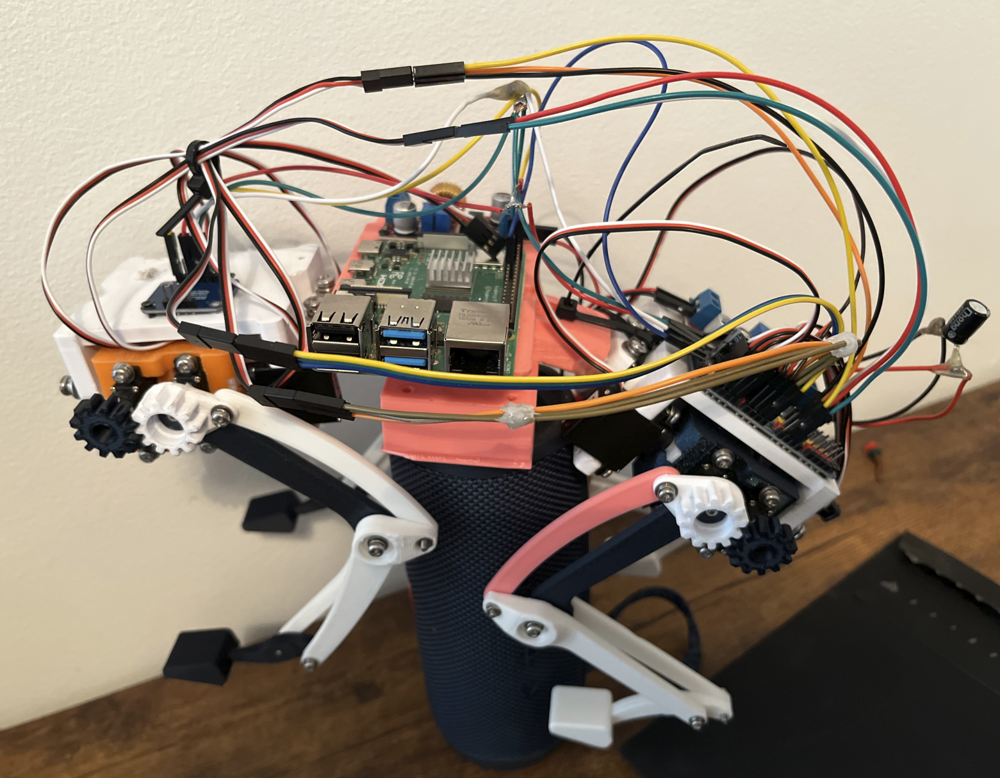
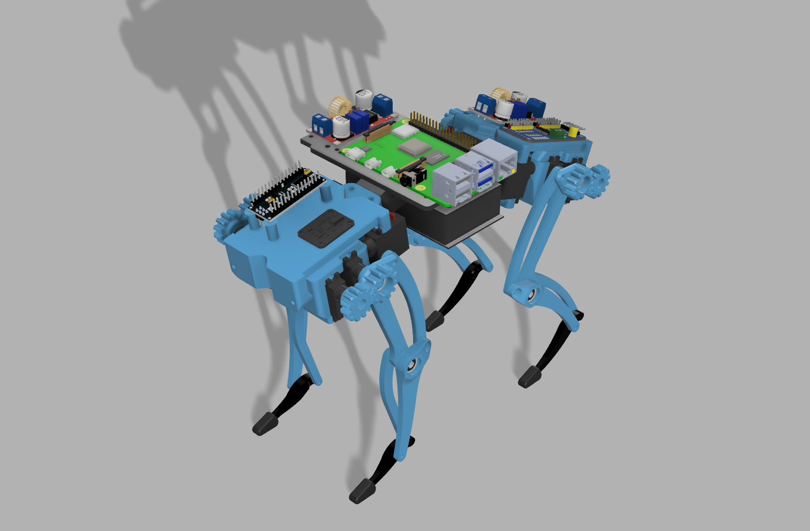

Overview
A 12-DOF quadruped robot built from scratch, spanning CAD design, 3D printing, electronics integration, and software development. The robot currently stands stably using calibrated servo positions and PID-style balance adjustments. Currently developing inverse kinematics and gait generation in MuJoCo simulation for walking locomotion.
Specifications
Mechanical Design
Complete mechanical design done in Fusion 360, with all structural components 3D printed. Each leg has 3 degrees of freedom using a 4-bar linkage mechanism with 1:1 gear ratios.
- Parametric CAD model in Fusion 360 with fabrication-ready STL exports
- 4-bar linkage leg mechanism with 75mm link segments
- Integrated mounting bosses for electronics (Pi, buck converters)
- Vibration-isolated IMU mount using foam interface for sensor protection

Three-tier assembly: legs/servos → main body with electronics → power system
Electronics Integration
Embedded system with Raspberry Pi 4 for high-level control, communicating with servo drivers and sensors over I2C.
Power Distribution
- Dual XL4015 buck converters providing 5V (logic) and 6V (servos) rails
- Power budget calculated from total servo current draw with safety margin
- 2S LiPo battery selected based on space and weight constraints
- Decoupling capacitors for servo current spike protection
Communication Architecture
- I2C bus shared between PCA9685 PWM driver and BNO055 IMU
- PCA9685 controlling all 12 Corona DS-843MG servos via PWM
- FSR402 force sensors on feet for ground contact detection

Electronics integration showing power distribution and I2C connections
Calibration & Testing
Systematic hardware validation before integration, including individual component testing and servo limit discovery.
- Tested voltage rails to verify buck converter output; identified and replaced one defective unit (outputting 14V instead of 5.9V)
- Mapped safe angular limits for each servo to prevent mechanical interference
- Validated BNO055 IMU readings and calibration status
- Tested FSR402 force sensors for reliable ground contact detection
- Tuned balance parameters for stable standing posture
Current Development: Kinematics in MuJoCo
Currently developing the forward and inverse kinematics model in MuJoCo physics simulation. This approach validates the kinematic model and gait patterns in simulation before deploying to the physical robot.
- Building URDF/MJCF model matching physical robot dimensions
- Implementing geometric IK solver for 3-DOF legs
- Developing gait patterns (trot, walk) with Bezier curve foot trajectories
- Sim-to-real transfer planned once simulation validates successfully
Hardware Components
Compute: Raspberry Pi 4
Actuators: 12× Corona DS-843MG servos
Sensors: BNO055 9-DOF IMU, 4× FSR402 force sensors
Drivers: PCA9685 16-channel PWM driver (I2C)
Power: 2S LiPo, 2× XL4015 buck converters
Technology Stack
Simulation: MuJoCo, Python
Embedded: Raspberry Pi 4, I2C (PCA9685, BNO055)
CAD: Fusion 360, OpenSCAD
Languages: Python, C++